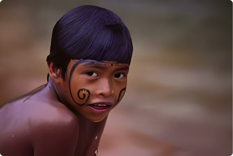

Nomeation
According to Novaes, "In the naming ritual the child is formally introduced into the Bororp society of his iedaga and the women of his father's clan, who adorn him for the ritual."
By name, the child becomes associated with a social category - the lineage of a clan - linked to a cultural hero of Bororo society, who, in mythical times, laid down the foundations of social life, which must be continued by concrete men.